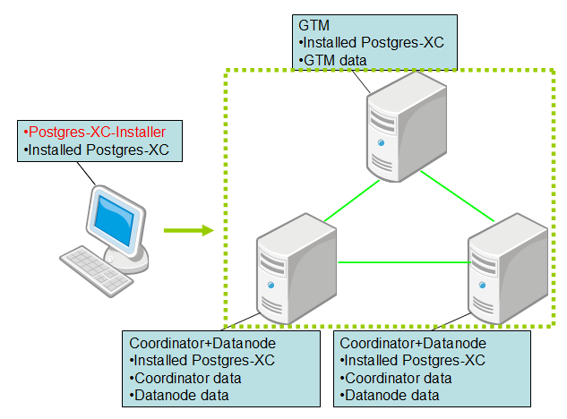
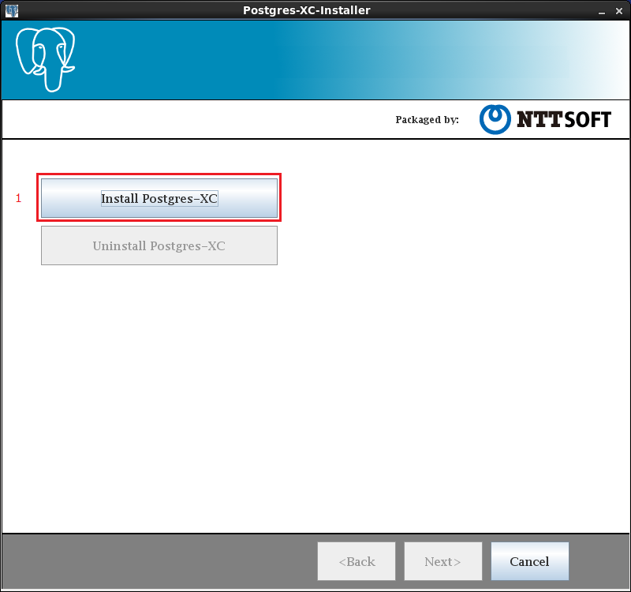
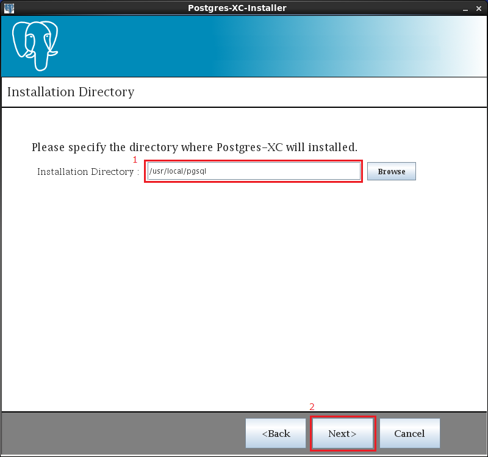
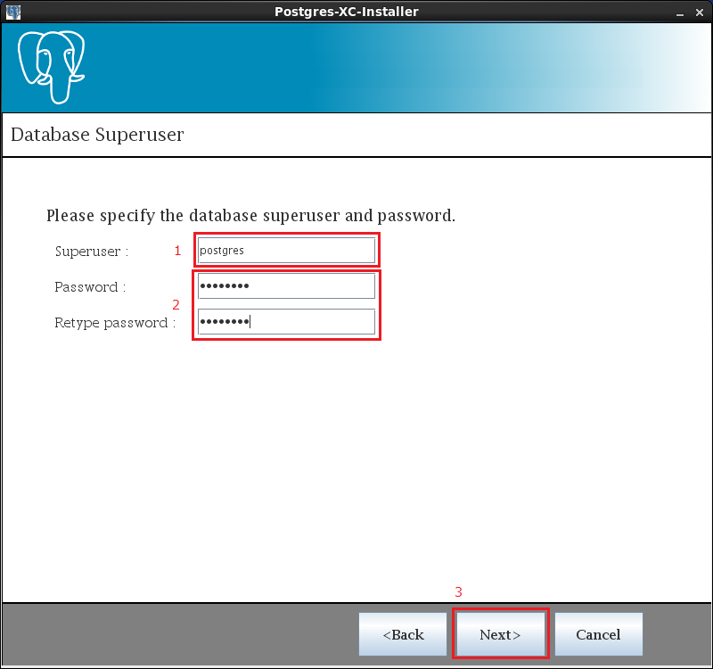
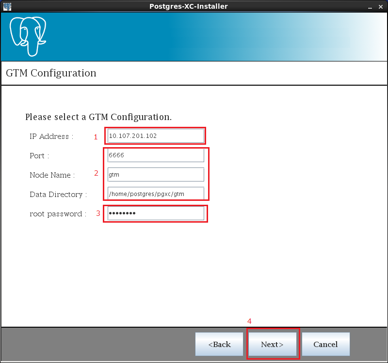
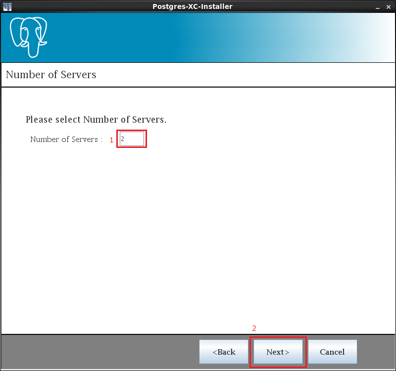
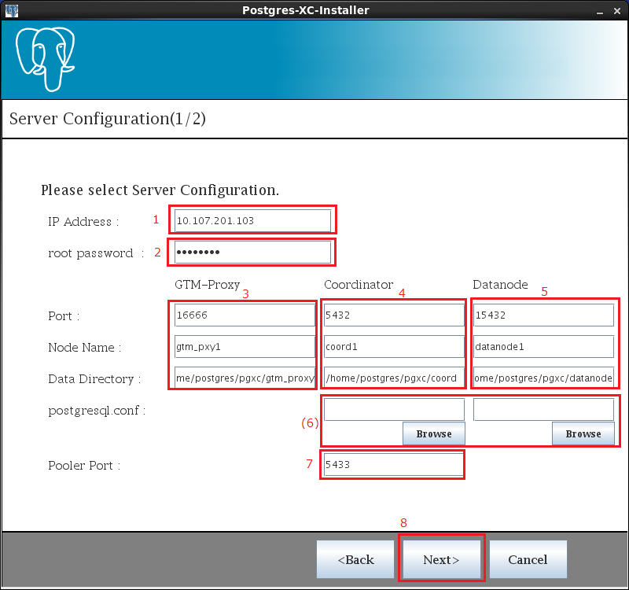
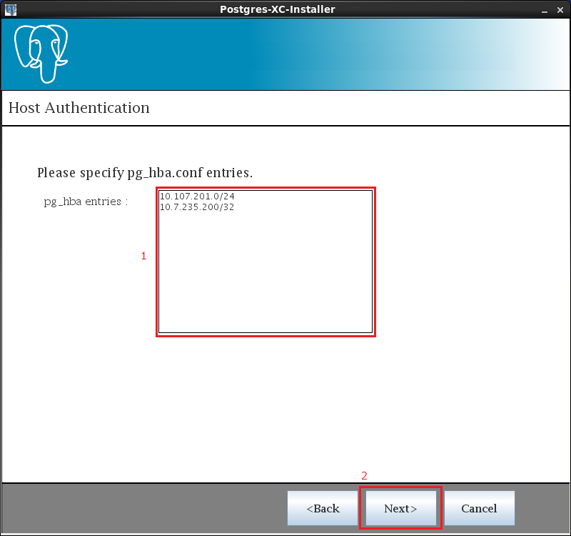
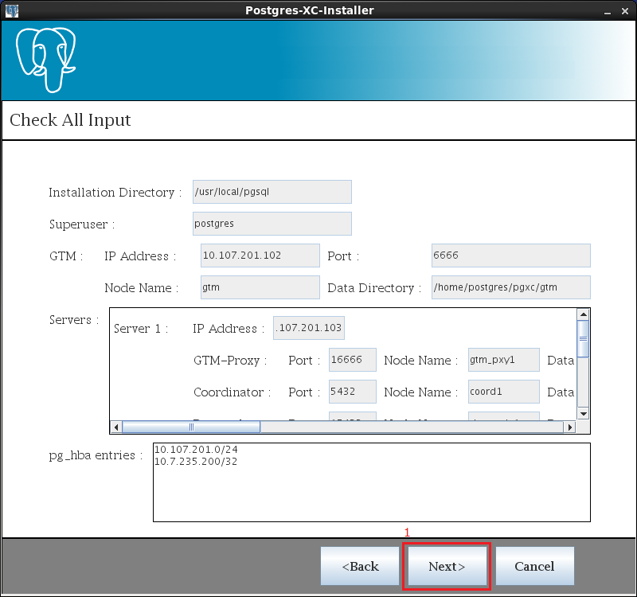
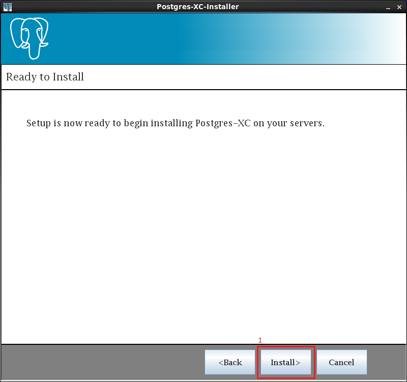

What is Postgres-XC-Installer?
Postgres-XC-Installer makes it easy to install Postgres-XC.
You can install Postgres-XC in multi servers by using Postgres-XC-Installer like the image below.

Platform
We support using Postgres-XC-Installer on CentOS 6.2 installed the following softwares.
- JDK 1.7.0
- Apache Ant 1.7.1
We support using Postgres-XC-Installer with the following Postgres-XC.
Notes
- Only root user can run Postgres-XC-Installer
- There must not be overlap in IP Address or host name of servers(running Installer server, GTM, Coordinator+Datanode)
- There must not be overlap in Node Name of Coordinator+Datanode servers
Starting Installer
1, Set Postgres-XC's source code
Postgres-XC's source tarball can be downloaded from : Postgres-XC project Page.
After extracting the source tarball, copy the source directory to postgres-xc-installer/resource/postgres-xc.
cp -r postgres-xc postgres-xc-installer/resource/postgres-xc
2, Build Installer
Run ant in postgres-xc-installer directory.
cd postgres-xc-installer
ant -f build.xml
3, Run Installer
Run java in postgres-xc-installer directory.
cd postgres-xc-installer
java -cp bin main/Main
Example
Here is the example of running Postgres-XC-Installer.
- Click

- Enter the directory you want to install Postgres-XC
Note: This directory must not exist already
- Click

- Enter the OS user who will be Postgres-XC superuser
Note: This OS user must not exist already
- Enter the OS user's login password
- Click

- Enter the IP Address or host name of server you want to use as GTM
- Enter GTM's Port, Node Name, Data Directory
- Enter root user's login password of server you want to use as GTM
- Click

- Enter the number of servers you want to use as Coordinator+Datanode
- Click

- Enter the IP Address or host name of server you want to use as Coordinator+Datanode
- Enter root user's login password of server you want to use as Coordinator+Datanode
- Enter GTM-Proxy's Port, Node Name, Data Directory
- Enter Coordinator's Port, Node Name, Data Directory
- Enter Datanode's Port, Node Name, Data Directory
- (If you want to change Coordinator's postgresql.conf or Datanode's postgresql.conf to your postgresql.conf, enter your postgresql.conf)
- Enter Pooler Port
- Click

- Enter the IP Address or host name of servers(running installer server, GTM, Coordinator+Datanode), which is used in pg_hba.conf
If you want to know how to enter, please see PostgreSQL Documentation
- Click

- Click

- Click(install start)

Disclaimer
We assume no responsibility for consequence arising in connection with the use of Postgres-XC-Installer.
We hope you use Postgres-XC-Installer on the test environment(not production environment).
Copyright (C) 2013 NTT Software Corporation.